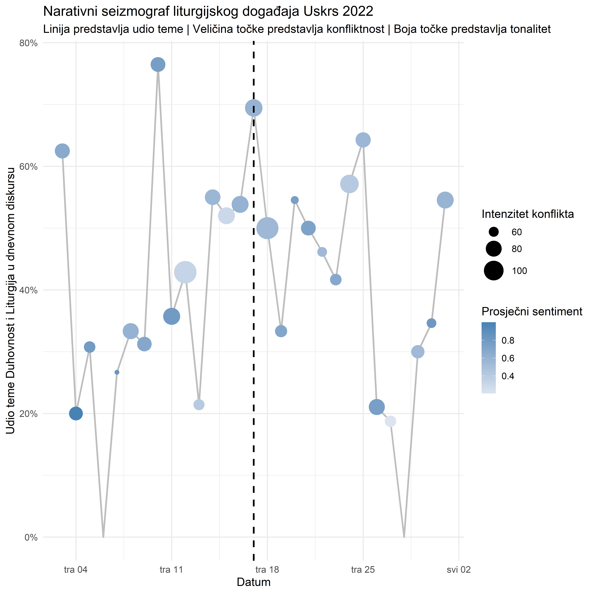

| date | n_articles | z_score_volume |
|---|---|---|
| 2022-04-17 | 36 | 5.102019 |
| 2023-04-01 | 28 | 3.577658 |
| 2023-12-24 | 28 | 3.577658 |
| 2022-08-15 | 28 | 3.395846 |
| 2023-04-07 | 27 | 3.360118 |
| 2023-04-08 | 27 | 3.360118 |
| 2021-01-12 | 30 | 3.209386 |
Dinamička analiza utjecaja stvarnih događaja na online diskurs
Dinamika medijskog prostora
U prethodnim fazama mapirali smo aktere, teme i opću atmosferu diskursa. Ova finalna faza analize ide korak dalje. Prelazimo sa statične slike na dinamičko modeliranje. Cilj nam je razumjeti kako se digitalni diskurs ponaša kao živi organizam koji reagira na vanjske podražaje stvarne događaje.
Ovaj izvještaj će demonstrirati kako možemo
- Automatski detektirati dane neuobičajene medijske aktivnosti s visokom pouzdanošću.
- Vizualizirati životni ciklus događaja kroz narativni seizmograf koji istovremeno prati volumen, konflikt i sentiment.
- Analizirati evoluciju narativa mjereći ne samo koje se riječi vežu uz temu već i kakva je atmosfera tih veza.
Digitalni seizmograf
Kako bismo identificirali najvažnije dane u našem trogodišnjem razdoblju, razvili smo digitalni seizmograf. On detektira dane kada su intenzitet konfliktnog jezika (CLI) ili volumen objava prešli prag od 99 og percentila, signalizirajući izvanredan događaj.
Dani s ekstremnim volumenom objava
Dani s ekstremnim intenzitetom konflikta
| date | avg_cli | z_score_cli |
|---|---|---|
| 2023-03-29 | 133.8143 | 4.404628 |
| 2022-04-28 | 141.9340 | 4.395141 |
| 2022-07-08 | 130.9002 | 3.602335 |
| 2022-02-20 | 128.7471 | 3.447630 |
| 2021-07-28 | 119.2026 | 3.021647 |


Interpretacija
Crvene točke su dani koji su uzdrmali digitalni prostor. Naša analiza pokazuje da ovi dani gotovo savršeno odgovaraju ključnim događajima poput Hoda za život, Pride povorke, parlamentarnih izbora i važnih obljetnica, potvrđujući da naš seizmograf uspješno identificira trenutke od najveće javne važnosti.
Narativni seizmograf Uskrsa 2022
Kako bismo ispitali kako se diskurs mijenja oko različitih tipova događaja, sada ćemo analizirati Uskrs 2022. godine (17. travnja). Za razliku od Hoda za život, Uskrs je primarno liturgijski i duhovni događaj. Očekujemo da će se to odraziti i u digitalnom odjeku.
Seizmograf je podešen da prati temu DUHOVNOST I LITURGIJA.
- Linija: Prikazuje udio ove teme u ukupnom diskursu.
- Veličina točke: Predstavlja intenzitet konflikta (CLI).
- Boja točke: Predstavlja prosječni tonalitet (sentiment).

Mir i pozitivan tonalitet
Seizmograf za Uskrs priča potpuno drugačiju priču od onog za Hod za život.
- Jasan i oštar vrhunac. Za razliku od višestrukih valova, medijska pažnja je izrazito koncentrirana na sam dan Uskrsa i dane neposredno prije (Veliki Tjedan). Udio teme DUHOVNOST doseže svoj apsolutni vrhunac točno na dan blagdana.
- Odsustvo konflikta. Najvažniji nalaz je veličina točaka. One su konstantno male kroz cijelo promatrano razdoblje. To je kvantitativni dokaz da je diskurs o Uskrsu gotovo u potpunosti ne konfliktan i ne polemičan.
- Dominacija pozitivnog tona. Sve točke na grafikonu su izrazito plave, što upućuje na visoko pozitivan sentiment. Medijsko izvještavanje je afirmativno, fokusirano na poruke nade, mira i duhovne obnove.
Evolucija teme o Alojziju Stepincu
Na kraju, umjesto da gledamo pojedinačne događaje, pratimo kako se jedan dugotrajan i kompleksan narativ onaj o blaženom Alojziju Stepincu mijenjao i uokvirivao kroz godine. Analizirali smo koje su se riječi najsnažnije vezale uz pojam Stepinac u svakoj od promatranih godina i izmjerili prosječni tonalitet tih specifičnih narativnih spojeva.

Interpretacija
Ova vizualizacija otkriva suptilne, ali značajne pomake u načinu na koji se o bl. Alojziju Stepincu govori iz godine u godinu. Iako je cjelokupan tonalitet diskursa, prikazan nijansama plave boje, konzistentno pozitivan, fokus i kontekst narativa se dramatično mijenjaju.
- godina. Dominiraju termini poput sps i pravoslavan, što upućuje da je narativ bio snažno uokviren ekumensko političkim odnosima sa Srpskom Pravoslavnom Crkvom i pitanjem kanonizacije.
- godina. Asocijacije se šire na rat, crkva i emisija. Ovo signalizira pomak prema povijesno medijskom okviru, gdje se raspravlja o njegovoj ulozi u Drugom svjetskom ratu, često kroz medijske formate poput emisija i dokumentaraca.
- godina. Diskursom dominiraju riječi molitva, veljača, krunica i devetnica. Ovo predstavlja jasan pomak na liturgijsko pobožni okvir, potaknut komemoracijom i vjerskim praksama vezanim uz obljetnicu njegove smrti.
Ovo je kvantitativni dokaz da veliki nacionalni i vjerski narativi nisu statični. Oni se dinamički rekontekstualiziraju ovisno o trenutnim događajima, prelazeći iz političke u povijesnu, a zatim u duhovnu sferu, pri čemu svaka godina naglašava drugačiji aspekt iste ličnosti.
Zaključak
Dinamička analiza utjecaja stvarnih događaja na digitalni diskurs otkrila je kako katolički medijski prostor funkcionira kao živi ekosustav koji reagira na vanjske podražaje.
Tri zaključka se ističu.
Automatska detekcija događaja funkcionira. Naš digitalni seizmograf uspješno identificira ključne trenutke u digitalnom prostoru, pokazujući da su vrhunci medijske aktivnosti i konfliktnog jezika pouzdani indikatori važnih društvenih događaja.
Različiti događaji imaju različite digitalne potpise. Usporedba Uskrsa i drugih događaja pokazuje kako liturgijski eventi generiraju pozitivan, nekonfliktан diskurs, dok društveno politički događaji proizvode složenije i polariziranije narativne obrasce.
Narativi evolviraju kroz vrijeme. Analiza diskursa o bl. Alojziju Stepincu dokumentira kako se isti narativ može rekontekstualizirati iz godine u godinu, odražavajući promjene u društvenoj i političkoj klimi.
Ovi nalazi otvaraju put za razvoj naprednog sustava praćenja u stvarnom vremenu koji može predviđati kada će se određene teme pojaviti u javnoj raspravi i kako će biti uokvirene, pružajući vrijedne uvide za komunikacijske strategije i razumijevanje javnog mnijenja.